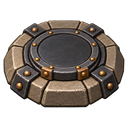
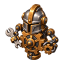

Marcha: cuatro direcciones por cuatro fases. Las hojas son las que usa la partida.
Embestidor
Curandero
Ladrón
Mecánico


Esta vista reproduce los cuadros para inspeccionar arte. El ritmo real lo controla la distancia recorrida en Godot; la carga acelera el paso y pausa/hielo lo frenan.